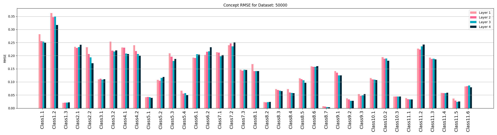
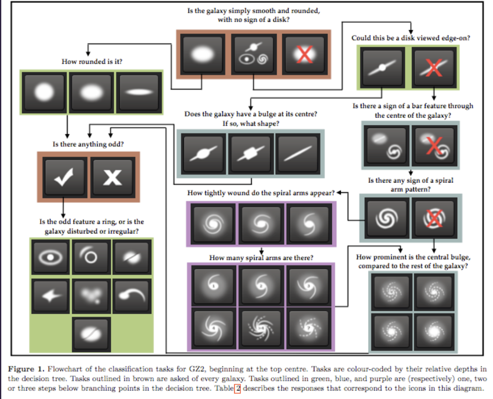
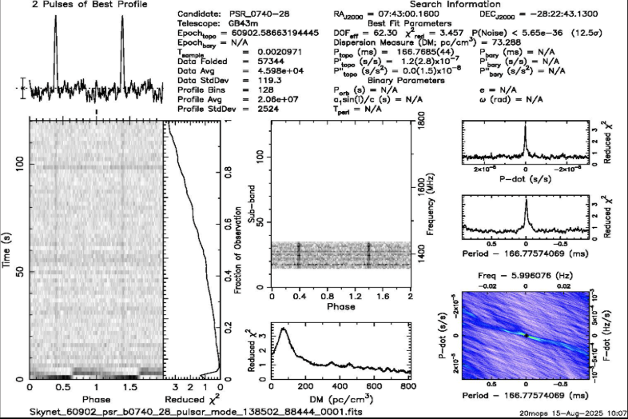
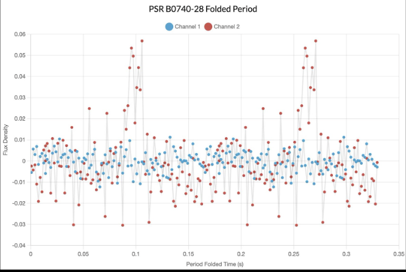

Projects
ERIRA 2025
Building a Neural Network for Galaxy Classification
- During the Summer of 2025 at Greenbank Observatory as part of the Educational Research in Radio Astronomy program (ERIRA), I collaborated on developing a deep learning network to classify images of galaxies based on their distinguished features. I implemented and trained a ResNet-18 convolutional neural network in PyTorch, handling all stages of dataset processing, model training, validation, and evaluation using scikit-learn across astronomical datasets varying from 1000 to 50,000 images. Additionally, I probed the network's hidden layers and computed the root mean square error (RMSE) for each concept the neural network was tested on. This was done per layer in order to provide valuable insights into how well the model learned each concept across the hidden layers, quantified by the RMSE. Group Presentation Slides


*This project was based on the documentation for the Galaxy Zoo challenge. More can be found here
Observing Pulsars with a 40-foot Radio Telescope
- The other project I was involved with at Green Bank Observatory was focused on using the 40-foot telescope to observe and detect pulsars. Working with the telescope's instrumention, we scanned regions of the sky, collected radio signals and analyzed the periodic emissions from the pulsars we found. We took fourier transforms of the periodgrams we made, allowing us to sonify the pulsars. This was done using tools developed by the Skynet Research Team. Aside from finding the pulsars by hand with the 40-foot telescope, our team also used the automated 20 meter telescope at GBO to find and sonify pulsars that were too difficult to observe with the 40-foot due to noise or timing. Group Presentation Slides


Listen to PSR B0740-28 captured with the 40-foot telescope:
Papers
PHYS 281L: Experimental Techniques in Physics
- The Radioactive Decay of Caesium-137, Attenuation for PMMA, Al, Cu and Radiation Monitor Efficiency (PDF)
- Exploring The Photoelectric Effect with Mercury Vapor and The Photoconductivity of Cadmium Sulfide (PDF)
- Finding the Permittivity of Free Space & The Dielectric Constant of Acrylic Using a RC Circuit and Non-linear Least Squares Fitting (PDF)
- Kater’s Reversible Pendulum (PDF)